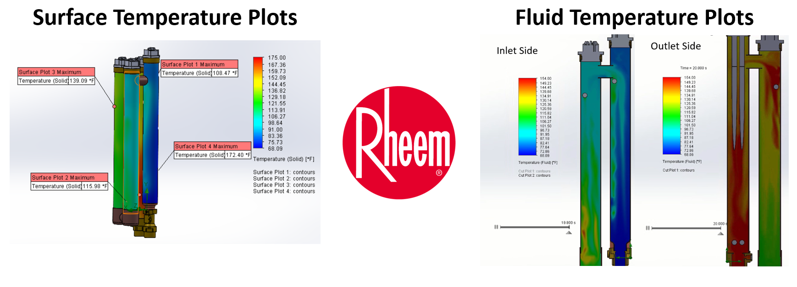
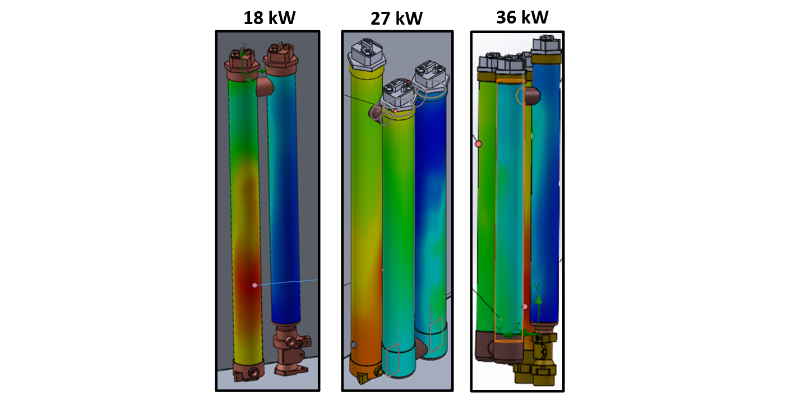
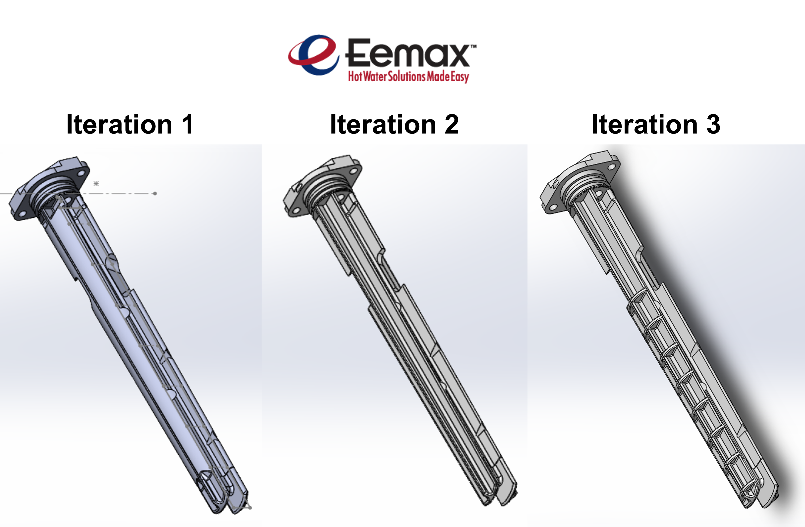
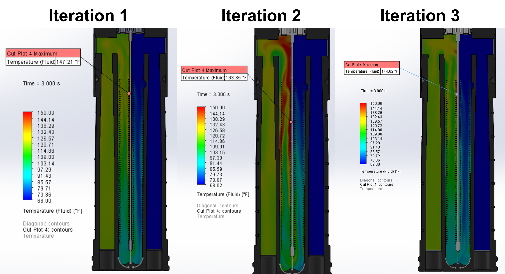

Project Goal: simulate our next generation residential water heater at
abnormally high temperatures to identify hot spot locations

Challenges
The inital models were not water tight
The models required a fine mesh which increases simulation run time
I had to generate simulationals for multiple models (18kW, 27kW, and 36kW)

3D models for the 18kW, 27kW, and 36kW models
Design Steps
Used the leak tracking tool to and added lids to make the model watertight
Ran the simulation at low flow rates and pressures to generate abnormally high hot spot temperatures
Generated temperature plots for the chamber surfaces and
the water in the heater
Results
This simulation predicted the hot spot locations for the chamber surfaces and water inside the heater
Information form this simulation will be used to position temperature probes called ECOs that shut off the heater if a temperature threshold is exceeded.
ECO temperature probes on an existing 27kW model
Skills Developed
SOLIDWORKS Flow Simulation
SOLIDWORKS Modeling
Technical Presentation
Project 2: Heater Core Redesign
July 2022
Project Goal: Redesign our heater core to use less material and reduce hot spot severity

A group of engineers designed iteration 1, a previous co-op designed iteration 2, and I designed iteration 3. Iteration 3 uses less material than iteration 1 and directs flow better than iteration 2
Challenges
The heater core model had many iterations and complex features
The design needed to be injection molding friendly
The part had many fine details which makes it difficult to 3D print
Design Steps
Added ribs that obstruct flow on the sides and increases flow by the heating element
Added a draft angle and evenly spaced out ribs to improve injection molding results
Tweaked the 3D printing settings to capture more fine details in the model
Generated a flow simulation at low flow rate and pressure to show worst case scenario hot spots

Iteration 1 and 3 have acceptable hot spot temperatures while iteration 2 does not
Results
Iteration 3 uses 26% less material than iteration 1, saving an estimated $35,000 per year
The addition of ribs to the new core brought down hot spot temperatures by 19°F
Physical testing showed that this model has better flow (ie less air bubbles) around the heating element than previous models
Both 3D printed and injection molded parts were physically tested to validate simulation results